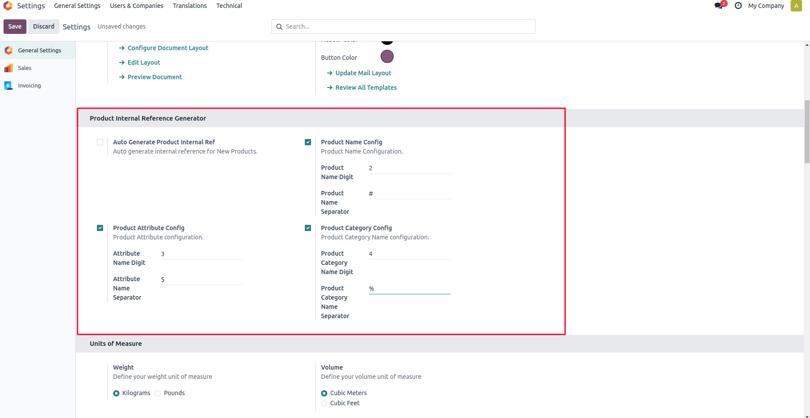
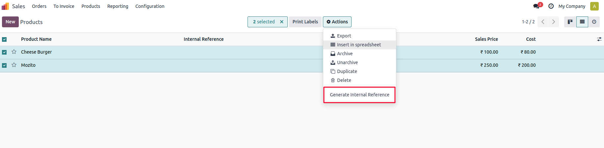
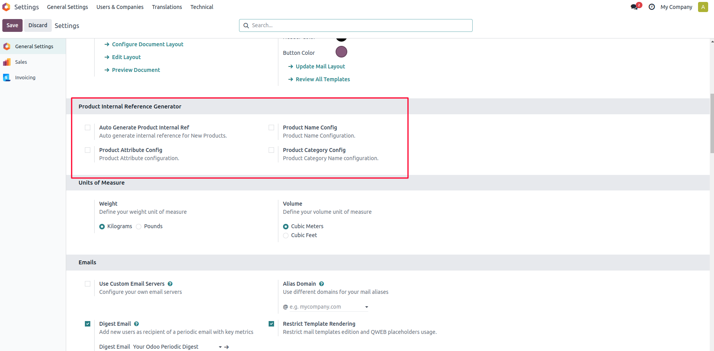
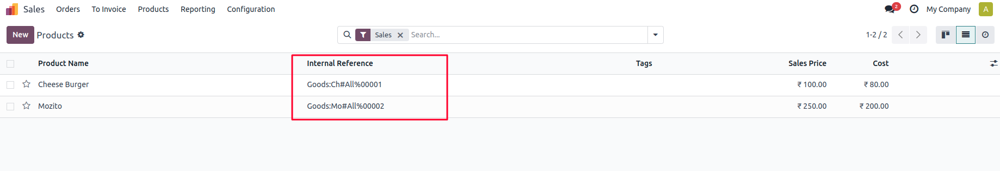

This module helps to automatically generate internal references for products in Odoo, improving product identification and inventory management. It supports references based on product name, category, and attributes.
Navigate to Settings and enable configuration options for Product Name, Product Category, and Product Attribute based internal references.

Select products from the product list and click the 'Generate Internal Reference' button to create unique references.

Enable the Internal Reference for New Products boolean field to automatically generate references for newly created products.

The first two letters of the generated reference represent the product type, helping with easy identification.

After installing the module, enable the desired configuration options in the settings, generate internal references for existing products using the button, and enable automatic generation for new products on the product form.
Apagen Solutions Pvt Ltd